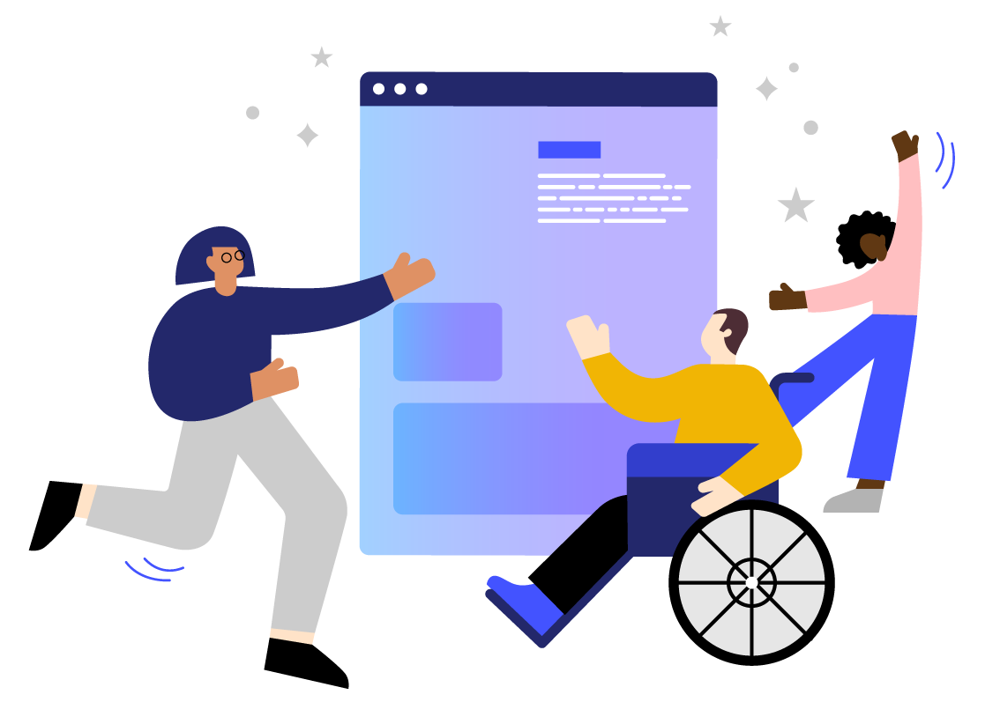

Color Contrast
A complete mobile accessibility utility for iOS. Combine manual color contrast checks with automated accessibility testing.

A complete mobile accessibility utility for iOS. Combine manual color contrast checks with automated accessibility testing.


We provide tools and resources that help solve web accessibility issues. We empower developers, product designers and researchers to create accessible experiences that are delightful for everyone.
Our team combines experience from leading brands such as Google, Apple and Spotify.